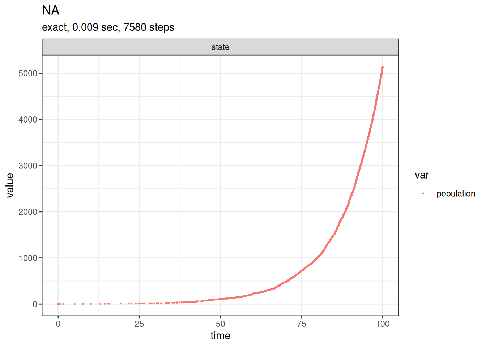
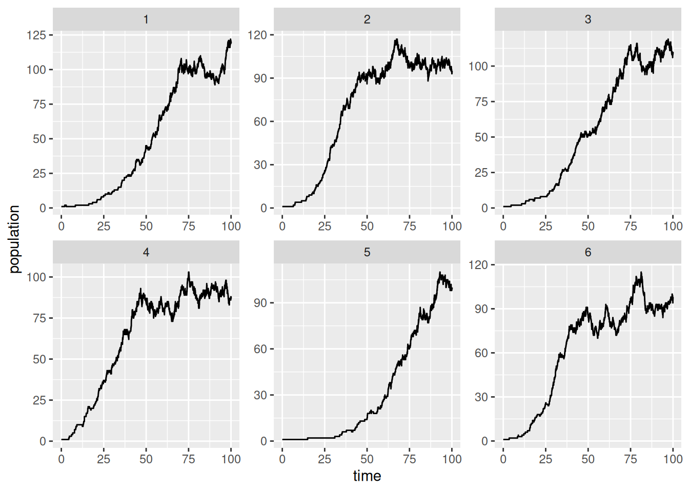
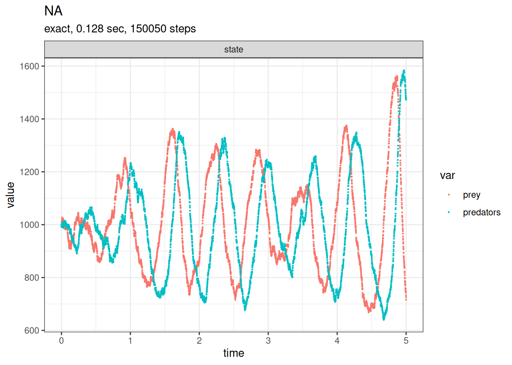
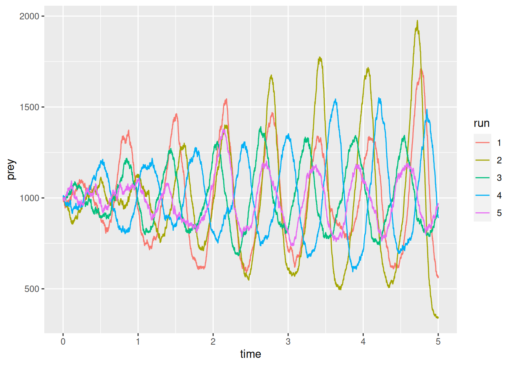

Show the code
library(GillespieSSA2)Once you’ve played around a bit, start up a new session and load up the Gillespie routines
library(GillespieSSA2)You may need to install the package first. See me if you need help with that.
Let’s start with the simple birth death process. This consists of a single state, which we’ll call population, and two transitions, or events: birth and death.
Our model consists of specifying functions for the rates for the two events.
First, focus on a single individual and suppose this individual gives birth at rate \(b\) and dies at rate \(d\). For simplicity, suppose the new born individual behaves exactly as the first individual. In particular, she is born a reproductive adult.
In a population of \(N\) such organisms, operating independently, births would occur at rate \(bN\) and deaths at rate \(dN\).
Our model has a single state variable, which we’ll call population, and a two parameters: a birth rate b, and a death rate d. We also need to set a starting value for the population, which we often view as another parameter (the initial state).
It is convenient to use named tuples to store defaults for the parameters and initial states.
initial_state <- c(population = 1)
params <- c(b = 0.10, d = 0.02)The SSA algorithm needs the model expressed in terms of reactions and rates, which the GillespieSSA2 package refers to as propensity functions. We have two of these: one for birth and one for death.
reactions <- list(
# propensity function effects name for reaction
reaction("b * population", c(population = +1), "birth"),
reaction("d * population", c(population = -1), "death")
)To run the simulation, we call ssa with the initial state, reactions, parameters, and a final time. There are several other options you can pass to the routine, but these all have reasonable defaults. There are a few options for expressing the rate, or propensity function. The simplest is likely to enter it as a c++ expression wrapped in quotes.
out <- ssa(
initial_state = initial_state,
reactions = reactions,
params = params,
method = ssa_exact(),
final_time = 100,
census_interval = .001,
verbose = TRUE
)Running SSA exact with console output every 1 seconds
walltime: 0, sim_time: 0
SSA finished!plot_ssa(out)Loading required namespace: ggplot2
Our simulation run is now stored in out. Entering names(out) or summary(out) at the command prompt shows what the simulation returns. head(out$time) and head(out$state) show the first few events. plot_ssa provides a basic plot of the results.
A simple extension of this to include a density dependence is to make the death rate nonlinear. For example, replace the constant per capita death rate \(d\) with the linearly increasing rate \(d + (b-d)N/K\).
Question: what is the value of \(N\) for which the birth rate \(bN\) matches the death rate \(\left( d + (b-d)\frac{N}{K} \right) N\)?
initial_state <- c(population = 1)
params <- c(b = 0.10, d = 0.01, K = 100)
reactions <- list(
# propensity function effects name for reaction
reaction("b * population", c(population = +1), "birth"),
reaction("(d+(b-d)*population/K) * population", c(population = -1), "death")
)
out <-
ssa(
initial_state = initial_state,
reactions = reactions,
params = params,
method = ssa_exact(),
final_time = 100,
census_interval = .001,
verbose = TRUE
)Running SSA exact with console output every 1 seconds
walltime: 0, sim_time: 0
SSA finished!plot_ssa(out)Models can easily be extended to add multiple state variables.
One possible implementation of the Lotka-Volterra predator-prey model is to define two state variables, prey and predator, and three reactions, prey birth, predation, and predator death.
initial_state <- c(prey = 1000, predators = 1000)
params <- c(c1 = 10, c2 = 0.01, c3 = 10)
reactions <- list(
# propensity function effects name for reaction
reaction("c1 * prey", c(prey = +1), "prey_birth"),
reaction("c2 * prey * predators", c(prey = -1, predators = +1), "predation"),
reaction("c3 * predators", c(predators = -1), "predator_death")
)
out <-
ssa(
initial_state = initial_state,
reactions = reactions,
params = params,
method = ssa_exact(),
final_time = 5,
census_interval = .001,
verbose = TRUE
)Running SSA exact with console output every 1 seconds
walltime: 0, sim_time: 0
walltime: 1000003999, sim_time: 1.68572
walltime: 2007829030, sim_time: 3.49854
SSA finished!plot_ssa(out)
Now we’d really like to sample several solutions from the model to get some idea of the variability. There are many ways to do this. We’ll start by using a fairly simple data frame and a for loop.
res_pred_prey = as.data.frame(NULL)
samples = 5
for (run in 1:samples) {
out <-
ssa(
initial_state = initial_state,
reactions = reactions,
params = params,
method = ssa_exact(),
final_time = 5,
census_interval = .001,
verbose = TRUE
)
res_pred_prey = rbind(
res_pred_prey,
data.frame(
time = out$time,
prey = out$state[,'prey'],
predator = out$state[,'predators'],
run = as.factor(run)
)
)
}Running SSA exact with console output every 1 seconds
walltime: 0, sim_time: 0
walltime: 1000010422, sim_time: 1.79524
walltime: 2000013177, sim_time: 3.5951
SSA finished!
Running SSA exact with console output every 1 seconds
walltime: 0, sim_time: 0
walltime: 1000011435, sim_time: 1.79079
walltime: 2000006050, sim_time: 3.55881
walltime: 3000004221, sim_time: 4.49554
SSA finished!
Running SSA exact with console output every 1 seconds
walltime: 0, sim_time: 0
walltime: 1000005464, sim_time: 1.84971
walltime: 2000022277, sim_time: 3.65765
SSA finished!
Running SSA exact with console output every 1 seconds
walltime: 0, sim_time: 0
walltime: 1000000310, sim_time: 1.8001
walltime: 2000009342, sim_time: 3.61428
SSA finished!
Running SSA exact with console output every 1 seconds
walltime: 0, sim_time: 0
walltime: 1000011220, sim_time: 1.7383
walltime: 2000011262, sim_time: 3.50501
SSA finished!Note the use of data.frame at the end of each loop to wrap each simulation result in a data frame with four columns. Then the use of rbind to append the new data frame to the previous one. The first line sets up an empty data frame (NULL) to start with.
The ggplot2 library provides some powerful plotting tools.
library(ggplot2)
ggplot(res_pred_prey,aes(x=time,y=prey)) +
geom_step(aes(col=run))
dev.new()
ggplot(res_pred_prey,aes(x=time,y=predator)) +
geom_step(aes(col=run))Notice ggplot wants the data in a long format. The easiest way to reshape dataframes is with the tidyr package. You can install this on its own or as part of the tidyverse package.
library(tidyr)
head(res_pred_prey) time prey predator run
1 0.000000000 1000 1000 1
2 0.001064755 1003 996 1
3 0.002036914 1007 991 1
4 0.003005564 1007 990 1
5 0.004053445 1007 986 1
6 0.005002070 1014 979 1res_long = gather(res_pred_prey,species,population,predator:prey,factor_key=TRUE)
head(res_long) time run species population
1 0.000000000 1 predator 1000
2 0.001064755 1 predator 996
3 0.002036914 1 predator 991
4 0.003005564 1 predator 990
5 0.004053445 1 predator 986
6 0.005002070 1 predator 979The second and third inputs of gather are the column names for the long format, and the fourth input is the range of columns from the wide data frame (res_pred_prey) to reshape.
We can use ggplot to assign colours and line-types by run and species
ggplot(res_long,aes(x=time,y=population,linetype=run,col=species)) + geom_step()
The result is interesting, but probably too much for one plot. We can put each plot in a panel using facet_grid or facet_plot.
ggplot(
res_long,
aes(x=time,y=population,col=species)
) +
geom_step() +
facet_wrap(~run)